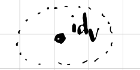
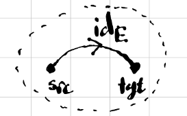

We now have all the players in category theory: categories, functors, and natural transformations. But we need something to make them dance together; this thing is called universal mapping properties.
Universal mapping properties are the soul of category theory. The idea is that we characterize an object in a category by looking at all the morphisms in or out of that object. There are two ways to do this: look at the morphisms in, and look at the morphisms out. We’ll start with morphisms out.
For any object \(x\) in a category \(\mathsf{C}\), there is a functor
called the covariant representable functor on \(x\).1
\(\operatorname{Hom}_{\mathsf{C}}(x, -)\) sends \(y \in \mathsf{C}\) to the set \(\operatorname{Hom}_{\mathsf{C}}(x,y)\) of morphisms from \(x\) to \(y\), and given a morphisms \(g \colon y \to z\), the function
\[ \operatorname{Hom}_{\mathsf{C}}(x,g)(f \in \operatorname{Hom}_{\mathsf{C}}(x,y)) = g \circ f \in \operatorname{Hom}_{\mathsf{C}}(x,z) \]
Let \(\mathsf{C}= \mathsf{Gr}\), the schema for graphs. Then \(\operatorname{Hom}_{\mathsf{Gr}}(V,-)\) is the graph with one vertex \(\operatorname{id}_V \in \operatorname{Hom}_{\mathsf{Gr}}(V,V)\) and no edges:

The representable on \(V\)
Similarly, \(\operatorname{Hom}_\mathsf{Gr}(E,-)\) is the graph with one edge \(\operatorname{id}_E \in \operatorname{Hom}_{\mathsf{Gr}}(E,E)\) and two vertices \(\operatorname{src}, \operatorname{tgt}\in \operatorname{Hom}_{\mathsf{Gr}}(E,V)\).

The representable on \(E\)
\(\operatorname{Hom}_{\mathsf{Set}}(2,-)\) is the functor on \(\mathsf{Set}\) that sends a set \(X\) to the set \[\{f \colon 2 \to X\} = X^{2} \] Given a function \(f \colon X \to Y\), \(\operatorname{Hom}_{\mathsf{Set}}(2,f)\) is the function that sends a tuple \((x_{1},x_{2}) \in X^2\) to the tuple \((f(x_{1}), f(x_{2})) \in Y^2\).
For \(n \in \mathbb{N}\), let \(P_n\) be the path graph of length \(n\). Then for a graph \(G\), \(\operatorname{Hom}_{\mathsf{Set}^{\mathsf{Gr}}}(P_{n}, G)\) is the set of length-\(n\) paths in \(G\). Thus, we can think of the representable \(\operatorname{Hom}_{\mathsf{Set}^{\mathsf{Gr}}}(P_{n}, -)\) as a functor which sends a graph to the set of length-\(n\) paths in that graph. Notice that as a special case if \(n = 1\), then this simply sends a graph to the set of edges in that graph. This is sneak peak at the Yoneda lemma (but we won’t get there today).
In catlab, we have a very powerful homomorphism search, which can actually compute the set \(Hom_{\mathsf{Set}^{\mathsf{C}}}(G,H)\) for any finite \(\mathsf{C}\). There are all sorts of uses for this, but one is simply finding length-\(n\) paths in a graph!
Representatives of functors
Now, there is a natural question to ask: can we go the other way? I.e., given a functor \(F \colon \mathsf{C}\to \mathsf{Set}\), is there an object \(c \in \mathsf{C}\) such that \(F \cong \operatorname{Hom}_\mathsf{C}(c,-)\), where \(\cong\) means natural isomorphism.
This is certainly not always the case, because there are graphs other than the single vertex graph and the single edge graph.
But when it is the case, it turns out that this \(c\) is unique up to isomorphism! That is, if \(\operatorname{Hom}_\mathsf{C}(c, -) \cong \operatorname{Hom}_\mathsf{C}(c', -)\), then \(c \cong c'\)! We won’t prove this today, but we will use it.
So this gives us a very powerful tool for constructing objects in a category; we can look for representatives of functors into \(\mathsf{Set}\), and if they exist, they must be unique! Let’s do an example.
Let \(X\) and \(Y\) be sets. Then consider the functor \(F \colon \mathsf{Set}\to \mathsf{Set}\) defined by
# Hom(X,-) x Hom(Y,-) -> Hom(X+Y,-)copair(f::FinFunction{X,Z}, g::FinFunction{Y,Z}) where {X,Y,Z} =FinFunction{Union{Left{X}, Right{Y}},Z}(disjoint_union(dom(FinSetC(), f), dom(FinSetC(), g)),codom(FinSetC(), g),Dict(vcat( [Left(x) =>f(x) for x indom(FinSetC(), f)], [Right(x) =>g(x) for x indom(FinSetC(), g)], ) ) )# Hom(X+Y,-) -> Hom(X,-) x Hom(Y,-)unpack(xs::FinSet{X}, ys::FinSet{Y}, f::FinFunction{Union{Left{X}, Right{Y}}, Z}) where {X,Y,Z} = (FinFunction{X,Z}( xs, codom(FinSetC(), f),Dict(x =>f(Left(x)) for x in xs) ),FinFunction{Y,Z}( ys, codom(FinSetC(), f),Dict(y =>f(Right(y)) for y in ys) ) )xs =Set([1,2,3])ys =Set([1,2,3])zs =Set([:a,:b])f =FinFunction(xs, zs, Dict([1=>:a, 2=>:b, 3=>:b]))g =FinFunction(ys, zs, Dict([1=>:b, 2=>:b, 3=>:a]))(f′, g′) =unpack(xs, ys, copair(f, g))(f == f′, g == g′)
(true, true)
However, there’s no reason why we should only consider such a construction for \(\mathsf{Set}\).
In a general category \(\mathsf{C}\), a representing object of \(\operatorname{Hom}(x,-) \times \operatorname{Hom}(y,-)\) is called the coproduct of \(x\) and \(y\), and we write it as \(x + y\). A category is said to have coproducts if there exists a coproduct for every pair \(x,y \in \mathsf{C}\).
Recall that representing objects are unique up to isomorphism, so the coproduct of two objects is unique up to isomorphism, which justifies our use of the word “the”.
The category of graphs has coproducts. The coproduct of two graphs \(G\) and \(H\) has